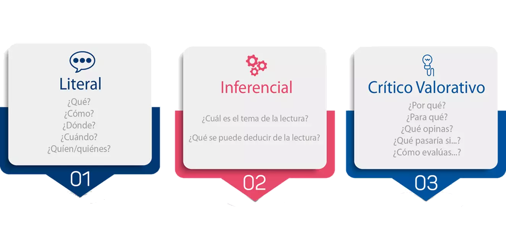

¿Que es la comprensión Lectora?
“La comprensión lectora es la capacidad para entender lo que se lee, tanto en referencia al significado de las palabras que forman un texto, como con respecto a la comprensión global del texto mismo.”
Existen tres niveles principales de comprensión:
Literal: reconocer información explícita (¿Qué dice el texto?).
Inferencial: deducir información implícita (¿Qué quiere decir?).
Crítica: emitir juicios sobre lo leído (¿Estoy de acuerdo? ¿Por qué?).

La lectura comprensiva se da en distintos niveles de profundidad porque los lectores captan de forma diferente. De allí que sea importante, en esa construcción de estrategias de lectura comprensiva, que el profesor y el alumno conozcan el nivel al cual se llega en cada lectura que se realiza, para poder implementar estrategias que vayan mejorando este proceso. Los factores que influyen en la comprensión de la lectura son: el lector, el texto, los conocimientos previos que la persona posee y las formas que utiliza para realizar dicha acción.